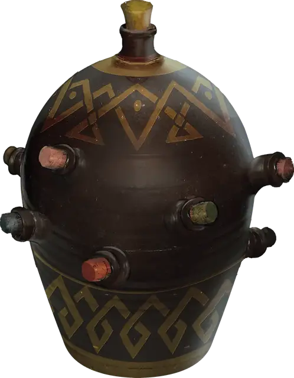

Алхимический сосуд (синий)
Alchemy Jug (Blue)
Чудесный предмет, необычный

Рекомендованная стоимость 101-500 зм
Этот керамический кувшин, кажется способным вместить 1 галлон жидкости и весит 12 фунтов вне зависимости от того, полный он или пустой. Если его потрясти, то можно услышать звуки плескающийся жидкости, даже если кувшин пуст.
Вы можете действием назвать одну жидкость из приведённой ниже таблицы, отчего кувшин начнёт её производить. После этого вы можете ещё одним действием откупорить кувшин и вылить эту жидкость из сосуда со скоростью до 2 галлонов в минуту. Максимальное количество жидкости, которое может произвести кувшин, зависит от вида жидкости, названной вами.
После того, как кувшин начинает производить выбранную жидкость, он не может производить другую, или произвести названную жидкость в объёме больше её максимума, пока не наступит следующий рассвет.
| Жидкость | Макс. объем |
| Вино | 1 галлон |
| Вода, пресная | 8 галлонов |
| Вода, солёная | 12 галлонов |
| Горячий заваренный чай | 1 кварта |
| Майонез | 2 галлона |
| Масло | 1 кварта |
| Мёд | 1 галлон |
| Пиво | 4 галлона |
| Уксус | 2 галлона |